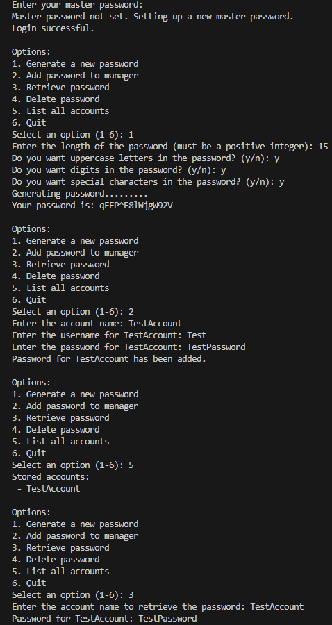

Password Manager & Generator
Technologies: Python, Cryptography (Fernet, PBKDF2)
Project Overview
This project is a Python-based password manager and generator, built to securely generate, store, and retrieve passwords. It uses industry-standard cryptography for password encryption, ensuring data integrity and security for users. The tool also includes a secure master password system for access control.
Key Features & Contributions
- Password Generator: Created a password generator with customizable options for length, uppercase, digits, and special characters to meet diverse security requirements.
- Encryption & Security: Implemented secure password encryption using the
FernetandPBKDF2cryptography methods to ensure user passwords are safely stored. - Master Password System: Developed a master password authentication flow to securely manage access to stored accounts and passwords.
- JSON-based Password Storage: Passwords are securely stored in a JSON file with encrypted entries, ensuring privacy and data persistence.
- User-Friendly Interface: Built a simple terminal-based interface allowing users to generate, store, retrieve, and delete passwords with ease.
Security Practices
Implemented key security measures such as salt generation for password hashing, a master password system with secure key derivation, and protected JSON file storage. The tool provides a reliable and safe environment for managing sensitive credentials.
Sample Output
Above is a sample output showing some of the PassLib functions. The full source code is posted on my github page.